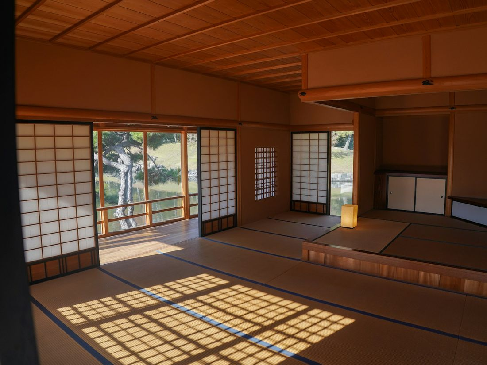

身体介護
お身体に直接ふれる介助です。記入日の前の1か月で 435 時間お伺いしています。
埼玉県富士見市・入間郡三芳町
土曜・祝日は朝8時から夕方6時まで（日曜は要確認）
富士見市鶴瀬東の訪問介護事業所です。
お住まいのお宅にお伺いして、身体の介護と生活の援助をしています。
※画像はイメージです
FIRST OF ALL
はじめてご連絡いただくとき、いちばん先に知りたいことは3つだと思います。順に並べました。
その時間に来てもらえるか
平日 8:00–21:00
土曜・祝日 8:00–18:00
日曜は公表内容の記載が分かれています。お電話でご確認ください。
その地域まで来てもらえるか
富士見市
入間郡三芳町
HOURS
下の帯は、介護サービス情報公表システムに公表されているサービス提供時間です。平日は夜9時までお伺いしています。
平日
土曜
祝日
日曜
日曜は公表内容の記載が分かれています。お電話でご確認ください。
事業所の
受付
日曜について。公表内容では、事業所の定休日が「日曜日、年末年始（12月30日〜1月3日）」、サービス提供時間には日曜 8:00〜18:00 が、それぞれ別の項目として記載されています。日曜のご依頼は、お電話でご確認ください。
AREA
富士見市
入間郡三芳町
公表されているサービス提供地域です。この2つの地域では、交通費のご負担はありません。
この地域の外へお伺いする場合は、交通費のご負担があります（下の「費用のこと」をご覧ください）。お受けできるかどうかは、お電話でご確認ください。

SERVICES
出典は、介護サービス情報公表システムの公表内容（記入日 2025年11月8日）です。
お身体に直接ふれる介助です。記入日の前の1か月で 435 時間お伺いしています。
暮らしまわりのお手伝いです。記入日の前の1か月で 42 時間お伺いしています。
公表内容に載っていないことは、お電話でお聞かせください。
| 平日 朝8時から夜9時までの訪問 | お受けしています |
|---|---|
| 土曜・祝日 朝8時から夕方6時までの訪問 | お受けしています |
| 日曜の訪問 | 公表内容の記載が分かれています。お電話でご確認ください |
| 富士見市・入間郡三芳町へのお伺い | 交通費のご負担はありません |
| 上の2つの地域より外へのお伺い | 交通費のご負担があります。お受けできるかはお電話でご確認ください |
| 年末年始（12月30日〜1月3日） | お休みです |
| 夜9時より遅い時間・早朝の訪問 | 公表内容に記載がありません。お電話でご確認ください |
| 喀痰吸引などの医療的なケア | 公表内容に記載がありません。お電話でご確認ください |
OUR WORDS
適宜社内ミーティング、訪問同行をおこない、情報の共有、技術の向上をはかっております。
介護サービス情報公表システム「サービスの質の向上に向けた取組」より
実務経験豊かな従業員からまだ経験の少ない従業員もいますが、みな仕事の取り組む姿勢がよく利用者想いの方々が勤務しております。
同「従業員の特色」より
TEAM
訪問介護員等
（常勤3・非常勤6）
うち
サービス提供責任者
うち
介護福祉士
うち介護職員
初任者研修修了
2025年11月8日時点の公表値です。訪問介護員等9人の常勤換算は4.9です。9人の内訳は、男性1人・女性8人、40代が2人・50代が7人と公表されています。
特定事業所加算Ⅱ／介護職員等処遇改善加算Ⅰ
この地で訪問介護の事業をはじめました。
はたらくことにご関心のある方も、同じ番号にお電話ください。募集の有無や条件は、事業所にお尋ねいただけます。
049-215-9153 に電話するFEES
介護保険の自己負担分のほかに公表されているご負担は、交通費とキャンセル料の2つです。あわせて、損害賠償保険に加入しています。
| 実施地域の外へお伺いするときの交通費 | 公共交通機関をつかう場合は実費。乗用車の場合は1kmにつき100円。 |
|---|---|
| キャンセル料 | 前の営業日の17時までにご連絡いただければ、かかりません。それ以降は800円。 |
| 損害賠償保険 | 加入しています。 |
INFORMATION
| 事業所名 | ケアサポート アクト |
|---|---|
| サービス | 訪問介護 |
| 所在地 | 〒354-0024 埼玉県富士見市鶴瀬東2-19-12 メイプルタウンⅡ 213号室 |
| 電話 | 049-215-9153 |
| FAX | 049-250-9789 |
| アクセス | 東武東上線 鶴瀬駅東口より徒歩5分 |
| 事業所の営業時間 | 平日・土曜・祝日 9:00〜18:00 定休日：日曜日、年末年始（12月30日〜1月3日） |
| サービス提供時間 | 平日 8:00〜21:00 土曜・日曜・祝日 8:00〜18:00 |
| サービス提供地域 | 富士見市、入間郡三芳町 |
| 事業の開始 | 2016年7月1日 |
| 事業所番号 | 1172901108 |
| 運営法人 | Global Act株式会社 （埼玉県入間郡三芳町大字上富1551番地2） |